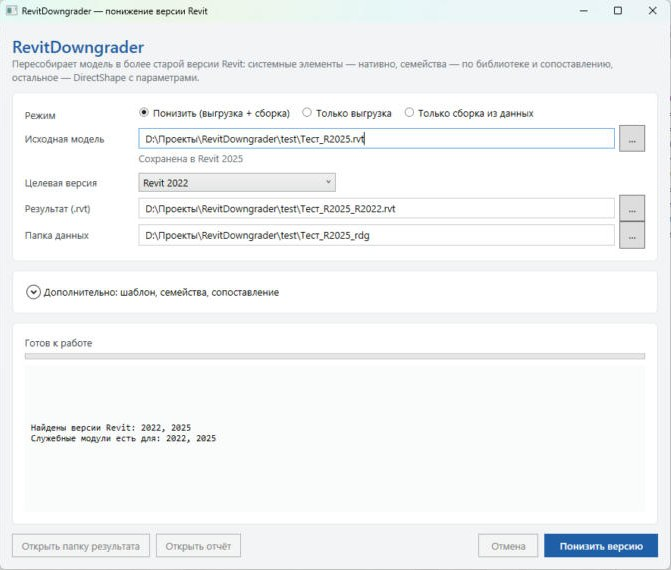
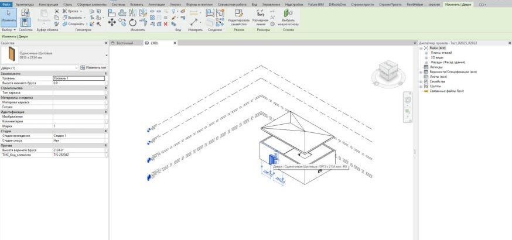

Программа для Windows · Revit 2017–2026
Понижение версии Revit
Revit не умеет сохранять модель в более старую версию. RevitDowngrader пересобирает её в нужной версии: стены, перекрытия, двери, окна, помещения и общие параметры — родными элементами Revit, всё остальное — геометрией с исходными параметрами.
Без ключа можно перевести один проект. Лицензия — 6 месяцев на одном компьютере.
Нет нужной версии Revit? Пришлите модель — переведём сами.

Как это работает
Программа определит её версию и найдёт установленные на компьютере версии Revit.
Нажмите «Понизить версию». Revit запускается в фоне, окна и предупреждения закрываются автоматически.
Рядом с исходным файлом появятся модель нужной версии и отчёт: что перенесено и каким способом.
Что переносится
| Элементы | Как | Подробности |
|---|---|---|
| Уровни, оси, планы этажей | нативно | Имена, отметки, параметры. |
| Стены и их типы | нативно | Слои и материалы, привязка, зависимости по высоте, изменённый профиль, соединения. Витражи — по типу. |
| Перекрытия, проёмы, шахты | нативно | По эскизу, с отверстиями и смещением. |
| Двери, окна, колонны, оборудование | нативно | Если семейство есть в шаблоне, библиотеке целевой версии или указано в файле сопоставления. Иначе — геометрия + проём в стене. |
| Помещения | нативно | Номера, имена, границы, разделители, параметры. |
| Общие параметры | нативно | Создаются с теми же GUID и привязкой к категориям — важно для ЦИМ АГР и МГЭ. |
| Всё остальное (крыши, лестницы, ограждения…) | геометрия | DirectShape той же категории, тип «Семейство : Тип», все параметры. |
| Виды, листы, аннотации, связи, рабочие наборы | нет | В модели создаются планы этажей по уровням. |
Проверено

Пробная версия и лицензия
Пробная версия
бесплатно
- Все возможности программы.
- Один проект — его можно переводить повторно, например после правок.
Лицензия
6 месяцев · 1 компьютер
- Без ограничения по числу проектов.
- В программе нажмите «Активировать…» и пришлите нам код компьютера — вернём ключ.
Вопросы
Что нужно на компьютере?Windows 10/11 и установленные с активной лицензией обе версии Revit: версия исходной модели (или новее) и целевая. Если они стоят на разных компьютерах, выгрузите модель на одном, а соберите на другом — для этого есть отдельные режимы.
Можно ли потом открыть модель в новой версии?Да, пониженная модель обычно открывается и обновляется в новой версии.
Куда уходит модель?Никуда: программа работает на вашем компьютере, модель не отправляется в интернет.
Что делать с семействами, которых нет в старой версии?Укажите папку с семействами целевой версии или файл сопоставления — программа подставит их. Остальные перенесутся геометрией с параметрами, а в стене останется проём.
Нет нужной версии Revit?Напишите нам, укажите исходную и нужную версию — переведём модель сами. Модели не передаём третьим лицам и удаляем после выдачи результата.
ООО «ТИС» · tiscompany.ru · tis_company@inbox.ru · +7 983 297 08 35